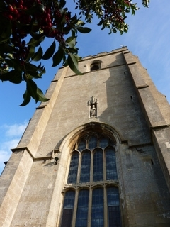
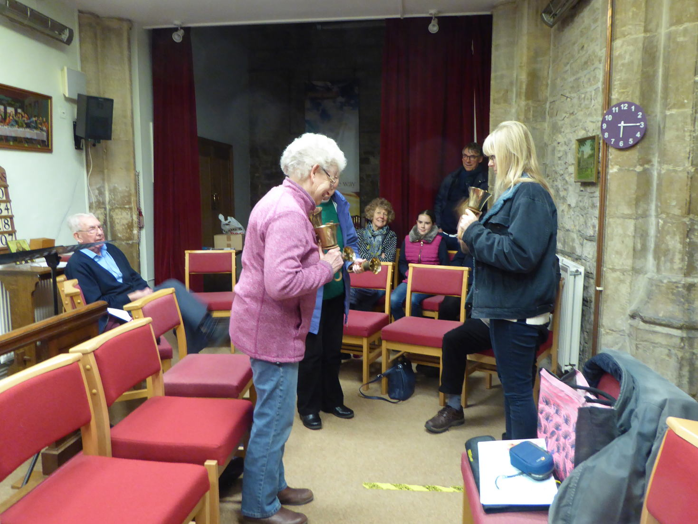
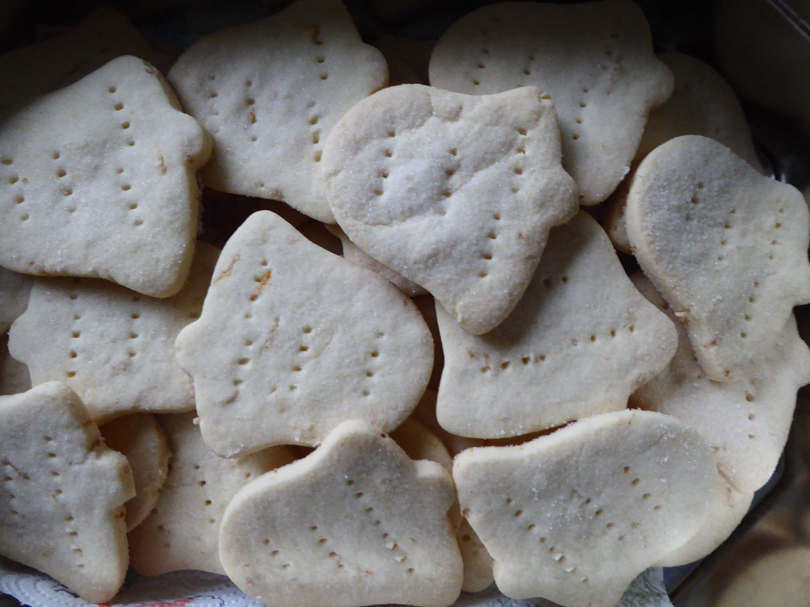
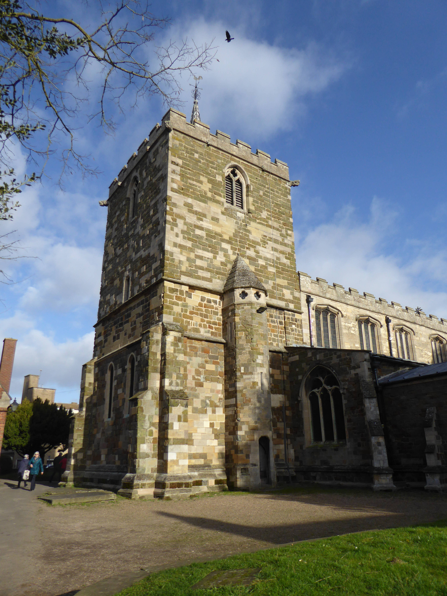
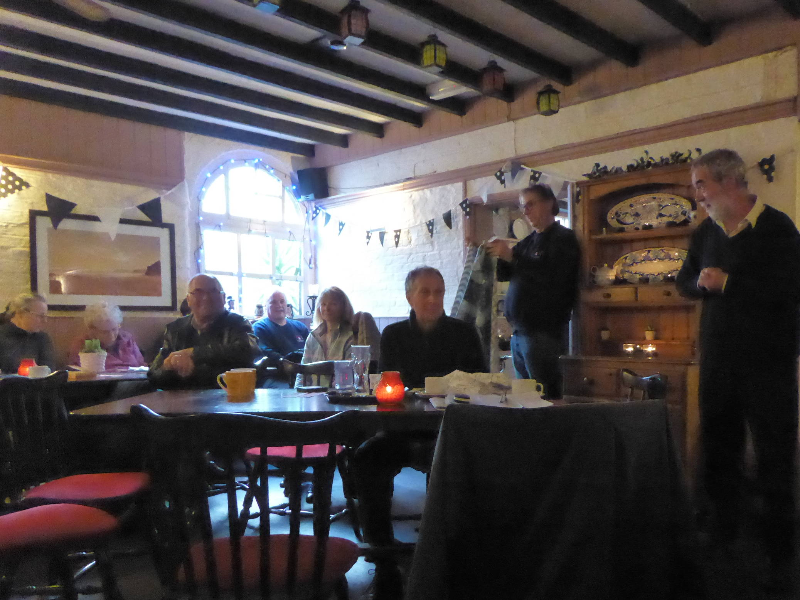

Branch Practice at Fishtoft - March 7th

A fresh departure for the Eastern Branch on Saturday 7th March 2020, starting with an introduction to change ringing on hand bells at 6pm. The refreshments were already up and running, when two sets of hand bells were put to good use led by Kate Meyer and Val Wild, helped by our visitors. Everyone was able to have a go at rounds or plain hunt, there was a quick theory explanation and a demo of plain bob minor.

Tower captain, David Bennett, had organised the church room, refreshments and permission to ring the bells. From 6.30 to 8.30 the tower bells were rung with Eastern Branch ringing master, Tony Barker, in charge. There was a short break for a meeting halfway through, chaired by EB secretary, Colin Simpson. Two new members were elected and welcomed to the Branch.

There were lots of ringers present, enjoying the ringing, and the tea, coffee and tasty selection of cakes. There was a collection for the EB bell repair fund, and donations for the refreshments, which was split between the church (for use of the facilities) and the bell repair fund.
Sadly it will be the last meeting for a while, due to Covid-19, stay safe and we will look forward to being together and ringing together again.
Thanks to everyone who helped make this such an enjoyable evening.
Val Wild
Eastern Branch Annual General Meeting - Horncastle Feb 2

The AGM was held this year at Horncastle. Ringing was followed by a short service, a buffet lunch at the Bull Hotel, the AGM and more ringing.
The Guild Master Chris Turner was welcomed as were Guild Treasurer Barbara Rand, Chris Woodcock from the Central Branch and Jenny and Andy Bennett from the Northern Branch
Annual reports were received and accepted from the EB officers.
Ringing master Tony Barker reported on a good year with plenty of ringing opportunities. Tony reported that the 8 bell practices at Burgh may be discontinued because of a lack of support.
Treasurer Val Wild reminded us that annual subs are now due and should be paid before the end of March 2020. Highlights of the year include:
- The 2019 barbecue raised £320, donated to the Branch BRF.
- Ringing Remembers Badges raised £50.
- Racenight raised £760, donated to the Guild Recruitment and Training Fund.
- Sale of Christmas cards raised £279.
Chris Turner outlined Guild events for the coming year and apologised for any “short comings” at the Guild 8 bell Striking Competition.
Guild Treasurer, Barbara Rand reported that records of membership numbers were in poor order and the Guild was losing valuable Gift Aid. She asked if all current members would go to the Guild Web site and fill in the Guild Membership Update form.

There was a Minutes silence for Tom Palmer who died during the year. The Ringing Master said Tom was a grand character and an enthusiastic member of the Guild. Also, for Natalie Haywood. Although Natalie was not a member of the EB she was learning to ring at Alford. She was tragically killed in an RTA at a young age.
Helen Brotherton was standing down as Branch Secretary. Colin Simpson was proposed by Helen to take over, and this was agreed by all. All the other officers remained the same, and were thanked for their work last year.
The meeting concluded with the drawing of the raffle which was well supplied with donated prizes. Finally there was an auction of a donated throw which raised £37, ably conducted by Chris Turner.